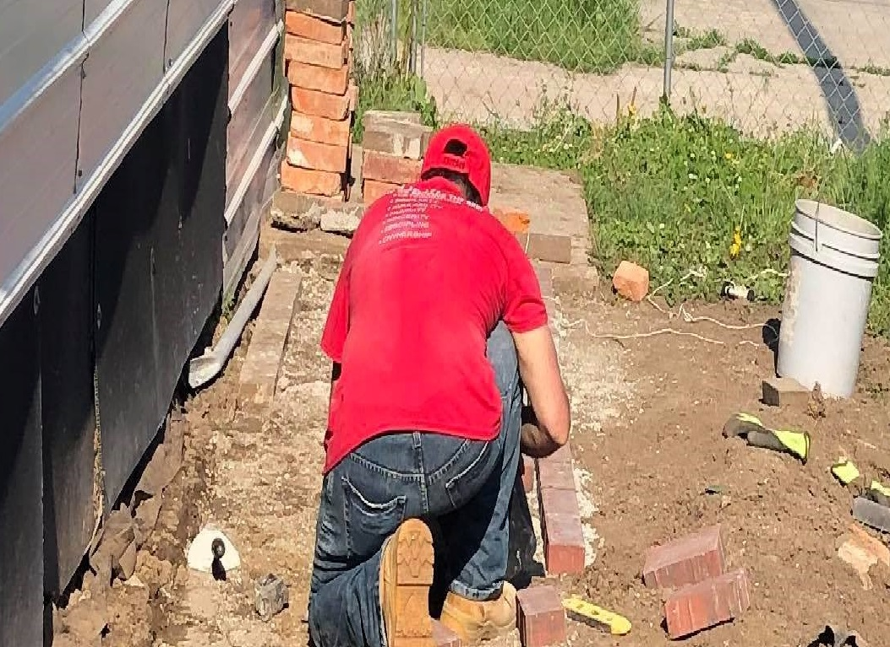
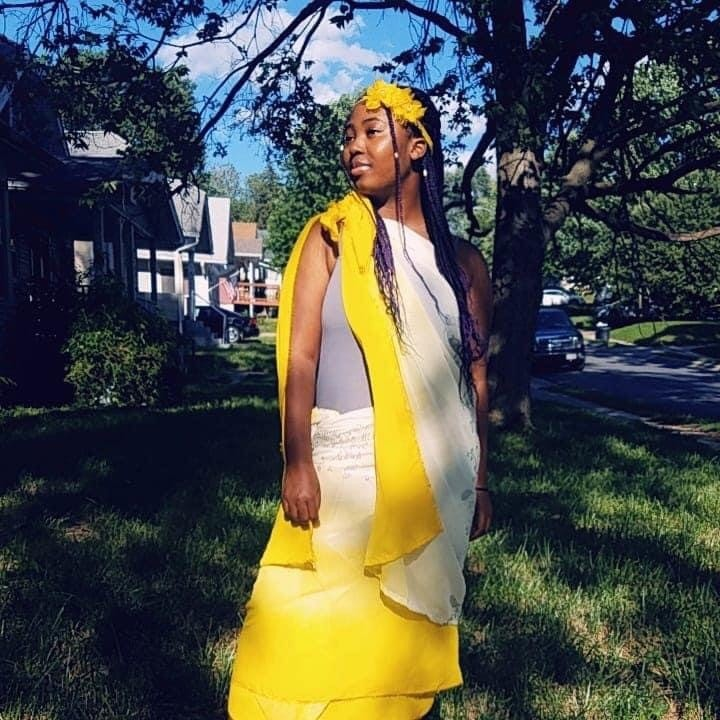
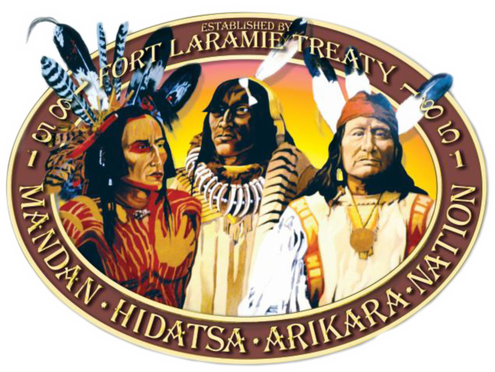

Interviews
Instead of giving everyone a textbook lesson, we decided to interview people from different backgrounds!


- I grew up in the time of war in El Salvador, when I was eight I watched my brother get shot by our National Guard when he was only thirteen. Because of that, I grew up constantly around bullets and the need to fight against those who shot my brother. I did join the army during these dangerous times, I believe now that I am a war survivor. In 1989 a treaty of peace was signed and our civil war came to an end. I joined the National Civil Securities to protect my people, but I ended up leaving and came to the US in 1996. Why did you leave your home country?
- I left El Salvador because I believed I had no future as a National Police officer. I was told by the academy I was not allowed to defend myself until I was hurt first, which lead me to believe I had no human rights as an officer. Having to wait for a delinquent to fire first was illogical and inhumane for me, I was to be shot first before I can shoot and protect myself. Since leaving, have you dealt with any discrimination?
- Honestly, direct discrimination has not been a major problem for myself. I have been ridiculed because of where I am from, which I then do defend myself because I believe one should stand up for themselves one way or another.
What was it like growing up?

- Growing up was different because I was an immigrant from Africa who didn't speak any English and I felt forced to always learn how to live a normal American life all while learning English in my ESL classes. Why did you leave your hometown?
- My family and I left Africa because my parents wanted to give us an opportunity to live a better, more safe life. Since leaving, have you dealt with any discrimination?
- I dealt with a lot of discrimination when I started school because on t.v. they depict Africans in a certain way so people already formed an opinion about me and said many hurtful things. For a long time I didn't like people knowing I was African because of that and I just wanted to fit in. What made it worse was I didn't speak English and I barely had friends so I couldn't defend myself or my place of birth.
What was it like growing up?

- Growing up being Native American I was only ever taught by family what our culture really was. The only thing I was ever taught in school was about how the “ great European himself “ Christopher Columbus discovered America and very little information about Native Americans being around at that time too. Many students and even teachers were very stereotypical and would mock the way natives sing at pow wows and I would get asked all the time by teachers themselves if I came from an alcoholic family. What is America to you?
- America to me is a place filled with minorities who don’t get to live the same way that the privileged do because of the color of our skin. As a Native how can I be a minority In American when we are on our own stolen land?! As an Native American have u dealt with discrimination?
- I have dealt with being discriminated plenty of times. My family and I were once in a small town in South Dakota and the people are very prejudice and In the store a white male yelled at us and said us natives were nothing but alcoholics and that this is his land. There are many more problems I have faced but they are a repeat of each other because people are very uneducated on the Native American culture and only hear and see the stereotypes that are being represented on holidays like thanksgiving , Columbus Day and even social media. What would you like the future to look like?
- I would like the future to be less stereotypical and come together as a whole. Changing the way that the school systems show native Americans would help teach students more about our culture . The native people are seen as “extinct “ but we are still here!
What was it like growing up?